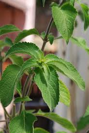

TULSI and its PRODUCTS

Indian mythology attaches a great significance to Basil by recognizing it as a holy herb. Perhaps, such significance comes from the actual health applications of the herb. Its use is recommended as a first aid in the treatment of respiratory, digestive and skin diseases.
Apart from these common ailments, Ayurveda also recognizes its use for the diseases ranging up to tumerous growths. Experimental studies identify it to be a highly promising immunomodulator, cytoprotective and anticancer agent.
Holy basil contains vitamin C and antioxidants such as eugenol, which protects the heart from the harmful effects of free radicals. Eugenol also proves useful in reducing cholesterol levels in the blood.
Vitamin C and A, phytonutrients, in Holy Basil are great antioxidants and protect the skin from almost all the damages caused by free radicals.
Tulsi acts a mild diuretic & detoxifying agent which helps in lowering the uric acid levels in the body. Acetic acid present in holy basil helps in the breakdown of the stones.
Tulsi is an age-old ingredient for treating fever. It is one of the prime ingredients in the formulation of various ayurvedic medicines & home remedies.
Tulsi is a natural mouth freshener and an oral disinfectant. Ocimum Sanctum can also cure mouth ulcers. Holy basil destroys the bacteria that are responsible for dental cavities, plaque, tartar, and bad breath, while also protecting the teeth.
The products available are tulsi oil, tulsi soap and tulsi scrub.